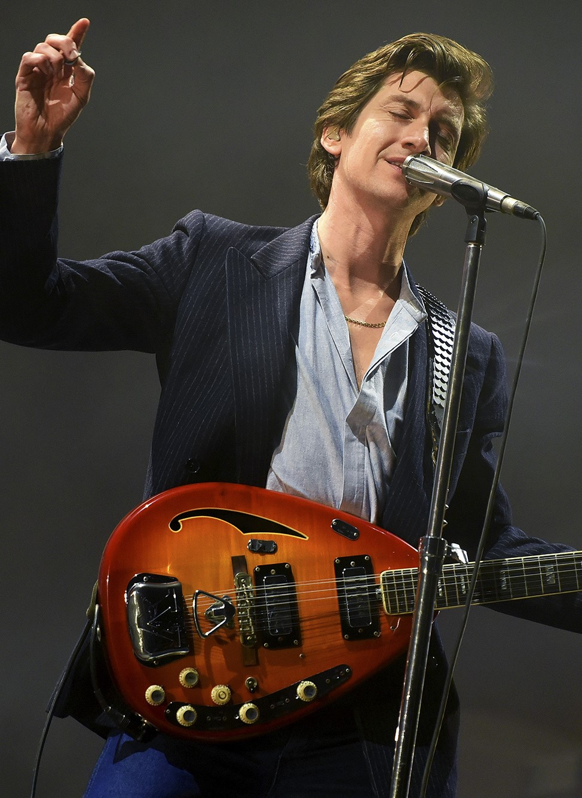

About Us
Arctic Monkeys
Arctic Monkeys merupakan grup musik rock asal Inggris. Dibentuk tahun 2002 di High Green, Kota Sheffield, Inggris. Arctic Monkeys beranggotakan Alex Turner (vokal utama, gitar utama, keyboard), Jamie Cook (gitar), Nick O'Malley (bas, backing vokal), Matt Helders (drum, perkusi, backing vokal). Anggota band sebelumnya Andy Nicholson (bas) dan Glyn Jones (vokal utama). Andy keluar dari band pada tahun 2006 sesaat setelah mereka merilis album perdana mereka.
Our Members
